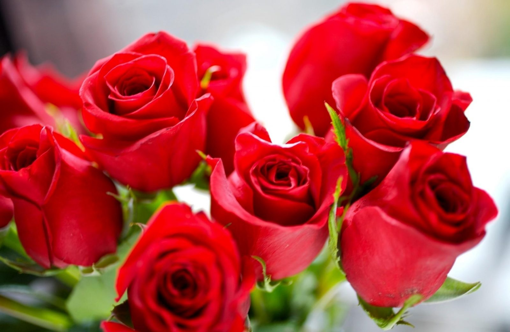
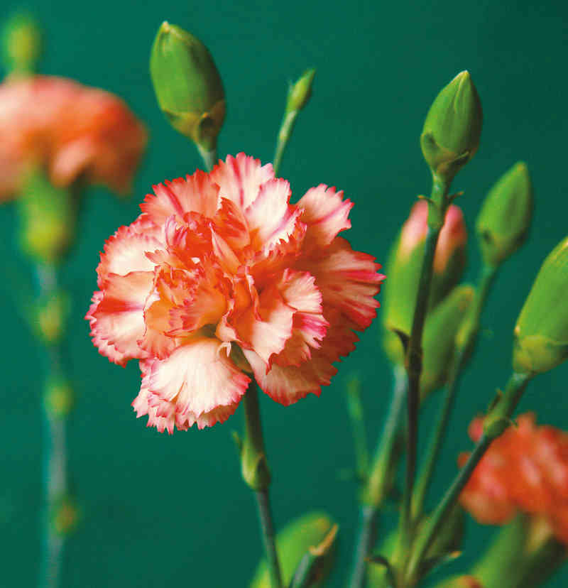
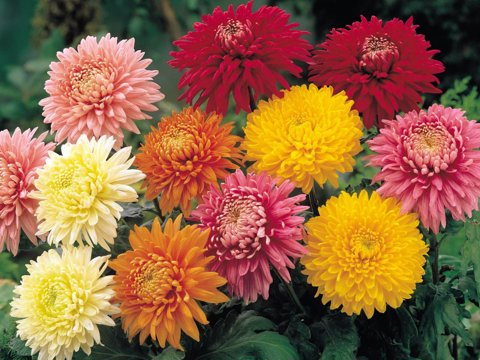
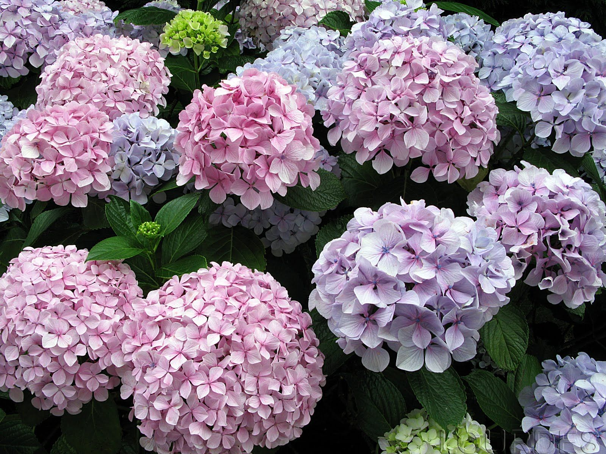
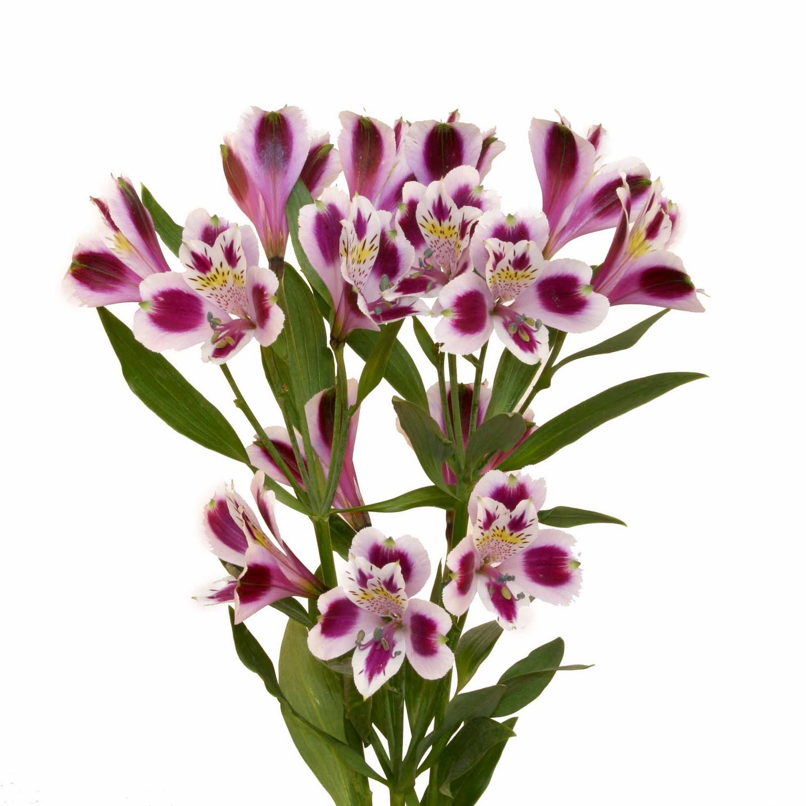

Siendo Colombia un país muy biodiverso cuenta con una amplia variedad de flores que son muy requeridas en paises extranjeros, por lo que en este artículo hablaremos de los cinco tipos de flores más exportados por Colombia que son:
La siguiente tabla muestra el orden de cual es la más vendida:
| NUMERO 1 | NUMERO 2 | NUMERO 3 | NUMERO 4 | NUMERO 5 |
|---|---|---|---|---|
| Rosas | Claveles | Astromelias | Crisantemos | Hortensias |
En el siguiente link podrán encontrar un articulo que habla específicamente de estas flores como las más famosas y requeridas en el exterior. Artículo exportación de flores colombianas
El género Rosa está compuesto por un conocido grupo de arbustos generalmente espinosos y floridos representantes principales de la familia de las rosáceas. Se denomina rosa a la flor de los miembros de este género y rosal a la planta.
El número de especies ronda las cien, la mayoría originarias de Asia y un reducido número nativas de Europa, Norteamérica y África noroccidental. Tanto especies como cultivares e híbridos se cultivan como ornamentales por la belleza y fragancia de su flor; pero también para la extracción de aceite esencial, utilizado en perfumería y cosmética, usos medicinales (fitoterapia) y gastronómicos.
Las especies progenitoras mayormente implicadas en los cultivares son: Rosa moschata, Rosa gallica, Rosa damascena, Rosa wichuraiana, Rosa californica y Rosa rugosa. Los cultivadores de rosas o rosalistas del siglo xx se centraron en el tamaño y el color, para producir flores grandes y atractivas, aunque con poco o ningún aroma. Muchas rosas silvestres y «pasadas de moda», por el contrario, tienen una fragancia dulce y fuerte.
El rosal es una de las plantas más populares de los jardines, incluso existen jardines específicos llamados rosaledas o rosedales, donde se exponen únicamente los miembros del género, cuya variedad es tan extensa que comprende desde rosales miniatura de 10 o 15 cm de altura, hasta grandes arbustos, trepadores que alcanzan varios metros de altura o rastreros utilizados como cubre suelos.
El clavel o clavelina (Dianthus caryophyllus) es una planta herbácea perteneciente a la familia de las Caryophyllaceae, difundida en las regiones mediterráneas. Es espontánea en la flora de la península ibérica. En su forma típica es una planta cespitosa, con numerosos vástagos de hasta 1 m de altura. Sus hojas son lineales, angostas, opuestas y envainadoras, más anchas las basales que las caulinares. Cada tallo forma una flor terminal. Sus flores son vistosas, pedunculadas en panícula o cima laxa, a veces solitarias, de bordes más o menos dentados.
La planta perenne de base leñosa alcanza una altura entre los 45 y los 60 cm La floración se produce durante casi todo el año. Normalmente son flores de fuerte fragancia. Es la flor nacional de España.
Los crisantemos (Chrysanthemum) son un género de alrededor de 30 especies de fanerógamas perennes en la familia Asteraceae, nativo de Asia y nordeste de Europa.
Son hierbas sufruticosas, perennes, que alcanzan un tamaño de hasta 1,5 m de alto, aromáticas; tallos erectos o patentes, frondosos. Hojas alternas, lobadas, lanceoladas a ovadas, 4–9 (–12) cm de largo y 4–6 cm de ancho, los segmentos enteros a gruesamente dentados, haz glabra, envés piloso con tricomas 2-armados, glanduloso; pecíolos hasta 4 cm de largo, con 2 segmentos auriculados en la base. Capitulescencias de corimbos laxos, pedúnculos bracteados; capítulos radiados; involucros hemisféricos; filarias herbáceas, las exteriores lanceoladas a oblongas, 4–8 mm de largo y 1–2 mm de ancho, las internas ovadas, 8–10 mm de largo y 2–3 mm de ancho, márgenes ampliamente escariosos; receptáculos fuertemente convexos, epaleáceos; flósculos del radio numerosos (100–200), en series múltiples, pistilados, las lígulas de 1–8 cm de largo, variadamente coloreadas (comúnmente purpúreas o amarillas); flósculos del disco 100–200, perfectos, las corolas tubulares, 5-lobadas, amarillas; base de las anteras obtusa, los apéndices terminales lanceolados; ramas del estilo oblongas, truncadas, peniciladas. Cipselas cilíndricas a obcónicas, 1–1.5 mm de largo, 5–8-acostilladas; vilano ausente.
El género Hydrangea incluye plantas ornamentales, comúnmente conocidas como hortensias, nativas del sur y el este de Asia (concretamente de China, Japón, Corea, el Himalaya e Indonesia) y de América. La mayor diversidad de especies de este género se encuentra en las zonas de China, Japón y Corea. La mayoría son arbustos de entre uno a tres metros de altura, algunas son árboles pequeños y otras son lianas que pueden alcanzar los treinta metros trepando por los árboles. Pueden ser de hoja caduca o de hoja perenne, no obstante las más ampliamente cultivadas, que son especies de climas templados, son de hoja caduca. Comprende 201 especies descritas y de estas, solo 43 aceptadas.
Alstroemeria, generalmente llamada «astromelia», «lirio del Perú» o «lirio de los Incas», es un género de Sudamérica con alrededor de 120 especies, principalmente de regiones frescas y montañosas en los Andes.
La planta es tuberosa o rizomatosa perenne. Cada tallo erecto tiene un follaje de pocas hojas lanceloladas, y termina en una umbela de 3 a 10 flores. Estos tienen 6 pétalos con marcas y parches de colores contrastantes. El número cromosómico básico es x=8.
